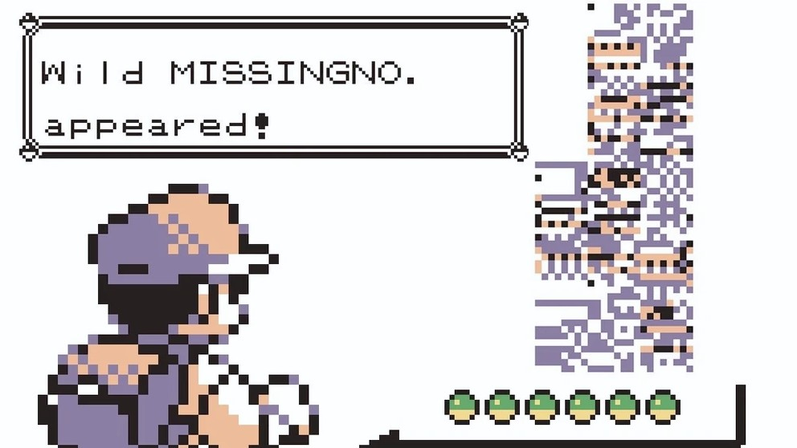
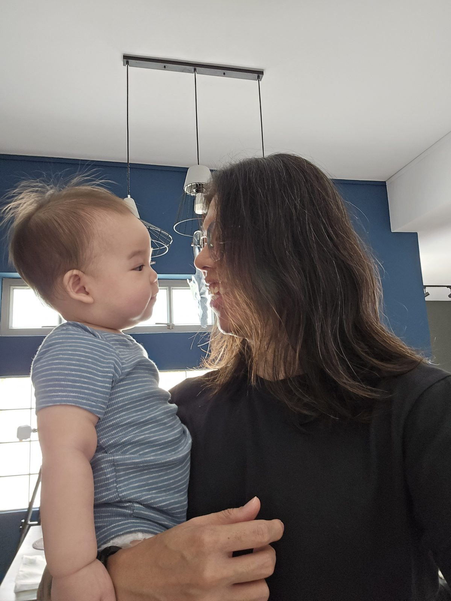

Why I built this
I built this website because I genuinely love the IP. Not just the TCG, but Pokémon GO, Red, Blue, Yellow, all of it. I also built it because I’ll be honest: for someone who calls himself a big Pokémon fan, my knowledge is all over the place. I remember this, but not that, and I’m sure a lot of you are in the same boat S.S. Anne.
Shoutout to my good friend Lanvoine, who jio’d* me to a Pokémon trivia night. I clutched a few answers, but mostly I realised how much I’d forgotten, or never knew, about a franchise I claim to love. Who knew, for instance, that Swampert, base Speed stat of 60, somehow still gets called “the jet ski of the ocean”?
*jio (Singlish, verb): to invite someone along. Usually casual, usually last minute, and very hard to say no to. “Eh, I jio you for supper later, can?”
I also just really love the TCG itself: collecting it, playing it, trading it. That’s where Jolteon’s Binder comes in. After amassing thousands of cards over the years, there’s plenty I genuinely don’t mind parting with.
I know how that can look: cards up for trade, some of it technically for sale, and the whole thing starts to smell like a shop. It isn’t one. You won’t find me listed on Carousell or anywhere else. I just don’t see the harm in recouping a little of what I’ve spent along the way, the same as anyone clearing out a shelf of games they’re done with.
I’m Jackson, the person actually behind all of this. I live in Singapore, I have a day job and a toddler, and at some point decided the best use of whatever hours were left in my day was building a Pokémon website.
I write mainly for people in Singapore and this part of the world. That’s not because there isn’t good Pokémon content overseas, there’s plenty, but because almost all of it was written with somewhere else in mind. So I made the thing I kept wishing existed here.
Why I write for this part of the world
A lot of Pokémon coverage online comes out of North America. That’s not a knock on it, it’s just where most of the audience and creators are.
But for those of us in Southeast Asia, it means getting used to release timing that doesn’t always line up, and “your local league” meaning something a little different from what it means here.
I wanted ItemSixHQ to be useful without anyone having to mentally translate all that first.
And in August 2027, the Pokémon World Championships are coming to Singapore.
My home.
I’d like at least one decent guide to that event to come from someone who’s actually here.
What I make
A growing, generation-by-generation Pokémon knowledge hub. Partly because I want it to help other people, partly because I absolutely do not remember which town every Gym Leader lives in.
Beginner and advanced guides, fact-checked against official rulings. I only started taking competitive play properly seriously in 2026, so some of this is me learning it properly right alongside you.
Things like the Rotation Checker: paste in a decklist and find out what’s legal. No account, no nonsense.
Questions people actually ask me, including the ones where the answer is basically, “please do not spend your money on that.”
My own Pokémon TCG collection. Some of it stays with me, some of it I’m happy to trade or sell. It exists because showing someone several thousand physical cards individually is not a reasonable human activity.
My own take on Pokémon news, plus a growing Singapore local’s guide to Worlds as we get closer.
Why “ItemSix”?
The name comes from one of my favourite memories of the original Game Boy games — Red, Blue and Yellow.
Yellow was my favourite of the three, but Red and Blue gave me MissingNo.
If you were there: yes, that MissingNo.
The Cinnabar Island glitch could duplicate the sixth item in your inventory. I did it as a kid, because obviously I did, and years later that memory ended up giving this entire project its name.
I also wanted something that didn’t begin or end in “Poké” or “TCG”. No shade. There are just… quite a lot of us.
A close second was the old “Mew under the truck” rumour. ItemSix won. Probably for the best.

Why “HQ”?
ItemSix on its own felt a little empty.
HQ — headquarters — wasn’t as cheesy as I expected it to be, and it had a ring to it.
So: ItemSixHQ.
That’s it. There isn’t a secret second MissingNo. glitch behind this bit.
The logo
A good friend of mine, Rain — RaiNx333 — designed it.
It’s a nod to MissingNo.: pixelated, built around the purple-ish Game Boy Color palette, with a slightly softer pastel edge. My one important request was that you could still make out the number 6 through all the glitchiness.
Somehow, he managed it.
Coming back to Pokémon
I don’t think of myself as an expert on Pokémon lore, the games, or the TCG. I’m a dad in my late 30s who’s loved this hobby since I was a kid. Like a lot of people my age, I took a break from it growing up — Pokémon got “uncool” somewhere in my teens and early adulthood. Coming back to it now is partly me correcting that, and making up for lost time.
It also really helps that my wife is into Pokémon too. She’s not quite as mossdeep into it as I am, but she knows her stuff, and it gives us something we genuinely enjoy together — including the odd Pokémon-centric event we still make it out to as a family.

Outside Pokémon
I’m also a singer-songwriter, and by day I manage operations at a music school.
Which means ItemSixHQ gets built around work, music, family, and whatever else life has decided to throw at me that week.
I’m not a full-time Pokémon creator, and I don’t particularly want to pretend I am. I’d rather make something useful when I have something worth saying than manufacture content because a calendar says I’m supposed to.
How this site is made
Besides vibecoding the website (with Claude), nothing here is stolen. If I used a source from elsewhere, I credited it.
No generated images. Unless it’s credited, every image is a photo I took or something I drew by hand myself. The only exception is official Pokémon sprites and artwork, which are © Nintendo / Creatures Inc. / GAME FREAK / The Pokémon Company and credited as such.
The ideas and the writing are mine, and I’m still rewriting a few older pages in my own voice. The one exception is the Pokédex: its facts (the dex text, where to find each Pokémon, its first anime appearance) are pulled from the official games, Bulbapedia and Pokémon Database, compiled with Claude’s help, and every entry lists its sources. The 3 Versions you see? I birthed those from my weird brain. I doubt any AI could think of this, tbh.
Privacy, credits and rights holders
Privacy. There are no accounts, ads or analytics on this site, and nothing you do here is sent to me. Your basket, your chosen Version and a few display settings are saved in your own browser only. Clear your browser data and they’re gone. If you message me on Telegram, Discord or email, I see what you send there, and those services have their own privacy policies.
To load, the page does pull a few things from other services: fonts from Google Fonts, the card list from a Google Sheet I maintain, and video thumbnails from YouTube. Like any website, those services can see your IP address when they serve you, and the host keeps ordinary server logs.
Credits. Pokémon names, card images, sprites and artwork belong to Nintendo, Creatures Inc., GAME FREAK and The Pokémon Company. Pokédex sprites and basic data (types, height and weight) come from the PokeAPI project. Photos and drawings that aren’t credited are mine.
If something here is yours. If you own something shown on this site and want it credited differently or taken down, email itemsixhq@gmail.com and I’ll deal with it promptly.
Why the Almanac exists
The Almanac is probably the clearest example of why ItemSixHQ exists.
I love Pokémon. I also absolutely do not have a magic memory for which town every Gym Leader lives in, what generation introduced what, or where half the Legendaries actually come from.
So I wanted one place where I could learn it, relearn it, and send my friends when one of us inevitably forgets something.
There are nine generations right now, with a tenth on the way in 2027. That makes it useful for people my age coming back to Pokémon, people discovering it now, and hopefully people who haven’t discovered it yet.
My toddler, Ollie, is part of why that last bit means something to me.
Really, I made the Almanac because it helps me.
I hope one day it helps him too.
Why the Pokémon TCG part exists
The TCG is probably the part of Pokémon I know best. I’ve bought and traded cards over the years like most people do, but honestly, playing has become the fun part for me.
I played a little as a kid without really understanding what I was doing, and a lot’s changed between 1996 and 2026. I only started taking competitive play seriously in 2026, and I’m still getting better at things like sequencing and, occasionally, remembering what my own cards do.
Once I’d relearned it myself, I wanted to help other people do the same. It’s a genuinely approachable card game once someone walks you through it, which is why there’s a section here on how to play, what’s doing well competitively, and what’s actually legal to use.
Why the digital binder exists
I also wanted a way to actually show people my collection. I’ve got thousands of cards, plenty of which I’m happy to trade away, and some of which I’ll sell — showing someone several thousand physical cards one at a time isn’t a reasonable human activity, and running an actual shop is about the last thing I want ItemSixHQ to become. So instead there’s a digital binder: you can filter what’s in it, build a trade or want list, and message me on Telegram or Discord to sort out the rest.
Trading and selling are part of the hobby to me — they’re not the reason any of this exists.
Community first
This is the part I care about most.
I already know how much fun Pokémon becomes when there are actual people attached to it. I’ve built a lovely little community through streaming, made friends through this hobby, and I’d like ItemSixHQ to become another place where that can happen.
If this site ever becomes known for one thing, I hope it’s the people around it.
Not card prices. Not pulls. Not whatever everybody’s trying to flip this week.
The people.
Everything else can grow from there.
If that sounds like your kind of thing, come say hi. Discord is where the community hangs out, and honestly the best place to start. Telegram is a direct line to me, and email works best for collab proposals.